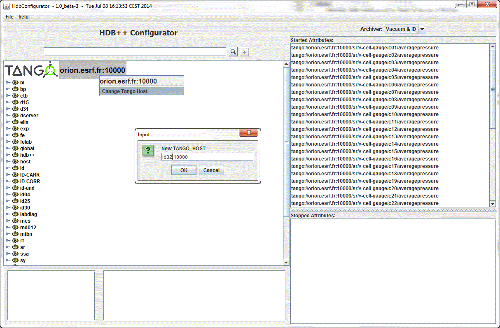

HDB++ on Multiple TANGO_HOST
-
Start the Configurator tool with the same TANGO_HOST environment variable
your HDB++ servers.
Export an environment variable "HdbManager" with the configurator device name
e.g. : HdbManager=tango/hdb/manager
By default, your JTree will represent this control system.
You will be available to change this TANGO_HOST by a right click on root.

-
Another way to work on 2 different control systems could be done
by exporting another environment variable "EVENT_TANGO_HOST"
e.g. : EVENT_TANGO_HOST=id32:20000
The control system tree will represent this second control system at startup.